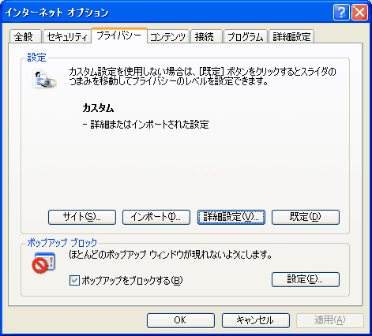
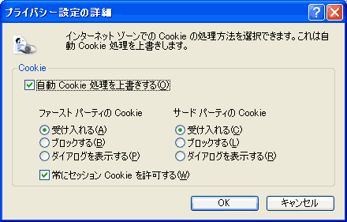
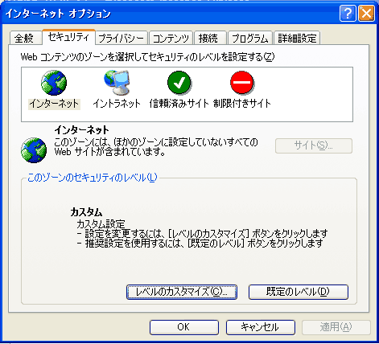
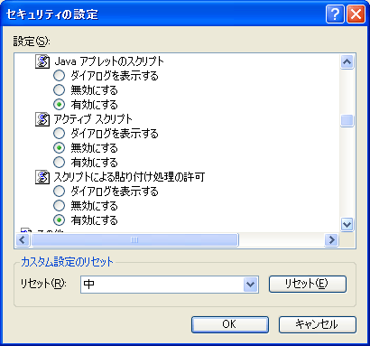

| ブラウザの設定 画面はWindows XP Internet Explorer6.0のものです |
Cookieの設定   ■[自動 Cookie 処理を上書きする] にチェックをいれる ファーストパーティとサードパーティのCookieを受け入れるにチェックを入れる ■[常にセッションクッキー許可する] にチェックをいれる ■OKをクリックで元の画面に戻る ■一度ブラウザを閉じて、アクセスし直して下さい 以上、でクッキーが有効になります。 注文が完了次第、必ず元の設定に戻して下さい。 Javascriptの設定 ■[ツール]->[インターネットオプション]->[セキュリティ]->[レベルのカスタマイズ]を選択する   ■アクティブスクリプトを有効にするにチェックを入れる ■スクリプトによる貼り付け処理の許可を有効にするにチェックを入れる ■OKをクリックして元の画面に戻る ■一度ブラウザを閉じて、アクセスし直して下さい 以上、でjavascriptが有効になります。 注文が完了次第、必ず元の設定に戻して下さい。 |
| その他の注意点 ウィルス監視ソフトを常駐させている場合、まれに正常に処理ができないケースがあるようです。そのような場合は、一時的にソフトの常駐をオフにして試してみて下さい。 注文が完了次第、必ず元の設定に戻して下さい。 |
| acry-ya.com |